I'm learning German (Deutsch) and using this page as a living notebook - every screenshot, table, or note I collect goes here so I can review it from my phone, laptop, or anywhere else without digging through folders. It will keep growing over time.
Links & Resources
All my books, websites, YouTube channels and Facebook pages are on a separate page, sorted by type:
→ Open all German learning links
→ Screenshots — screenshots from my German class and lesson videos
Netzwerk neu — my course book
My class uses Netzwerk neu. It comes as two books that go together:
| Book | English | What it's for |
|---|---|---|
| ① Kursbuch | Course book | The main lessons: texts, dialogues, listening and speaking |
| ② Übungsbuch | Exercise book | Extra practice and homework for the same chapter |
The audio and video for both books are on www.allango.net. How I use them: work through a chapter in the Kursbuch with its audio playing, then do the same chapter in the Übungsbuch to practise it.
What the first lesson covers
| Deutsch | English |
|---|---|
| grüßen und verabschieden | Greeting and saying goodbye |
| sich und andere vorstellen | Introducing yourself and others |
| nach dem Befinden fragen und darauf reagieren | Asking how someone is, and replying |
| über sich und andere sprechen | Talking about yourself and others |
Das Alphabet
The German alphabet, with a rough Bangla/English phonetic guide for each letter.
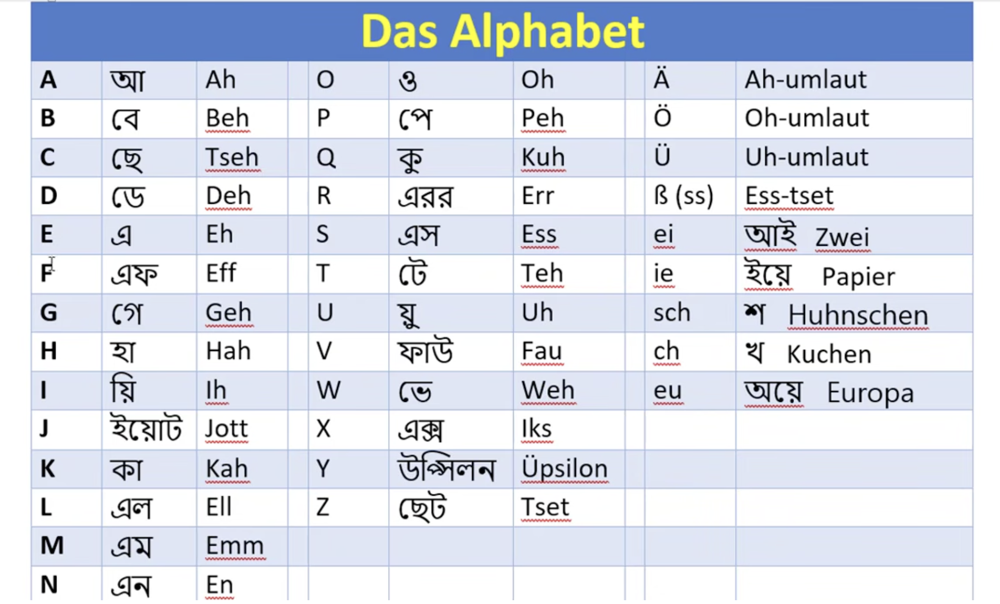
Letters A-Z
| Letter | Bangla | Sounds like |
|---|---|---|
| A | আ | Ah |
| B | বে | Beh |
| C | ছে | Tseh |
| D | ডে | Deh |
| E | এ | Eh |
| F | এফ | Eff |
| G | গে | Geh |
| H | হা | Hah |
| I | য়ি | Ih |
| J | ইয়োট | Jott |
| K | কা | Kah |
| L | এল | Ell |
| M | এম | Emm |
| N | এন | En |
| O | ও | Oh |
| P | পে | Peh |
| Q | কু | Kuh |
| R | এরর | Err |
| S | এস | Ess |
| T | টে | Teh |
| U | য়ু | Uh |
| V | ফাউ | Fau |
| W | ভে | Weh |
| X | এক্স | Iks |
| Y | উপ্সিলন | Üpsilon |
| Z | ছেট | Tset |
Umlauts & special letters
| Letter | Sounds like |
|---|---|
| Ä | Ah-umlaut |
| Ö | Oh-umlaut |
| Ü | Uh-umlaut |
| ß (ss) | Ess-tset |
Common sound combinations
| Combo | Bangla | Example word |
|---|---|---|
| ei | আই | Zwei |
| ie | ইয়ে | Papier |
| sch | শ | Hühnchen |
| ch | খ | Kuchen |
| eu | অয়ে | Europa |
Pronunciation Dictionary
Using dict.cc - a free German–English dictionary - to look up word meanings and pronunciation whenever I hit a new word.
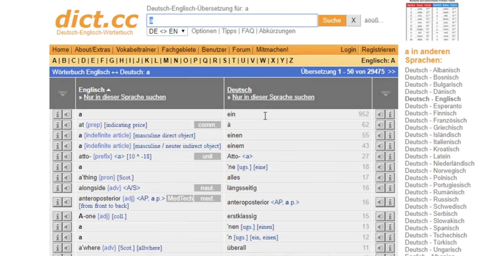
Reverso Context — translations in real sentences
context.reverso.net is one of the best sites for learning German. Instead of a single dictionary meaning, it shows every common way a phrase is translated, with real example sentences from books, films and websites.
Example: searching "ich darf" (German → English) gives I can, I would, I may, I'm, I should, let me, may I, I get to, I could, I'll, I might, allow me, I am allowed, mind if I, you don't mind. This shows how one short German phrase can have many English meanings depending on the context.
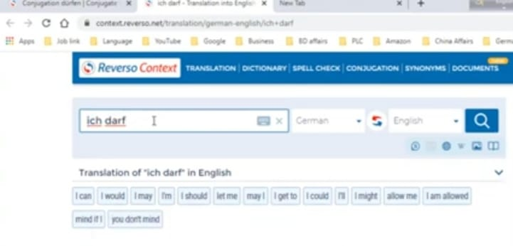
Die Nummer (Numbers)
Numbers 0–31. From 21 onward, German builds numbers as "unit + und (and) + ten", e.g. einundzwanzig = one-and-twenty = 21.
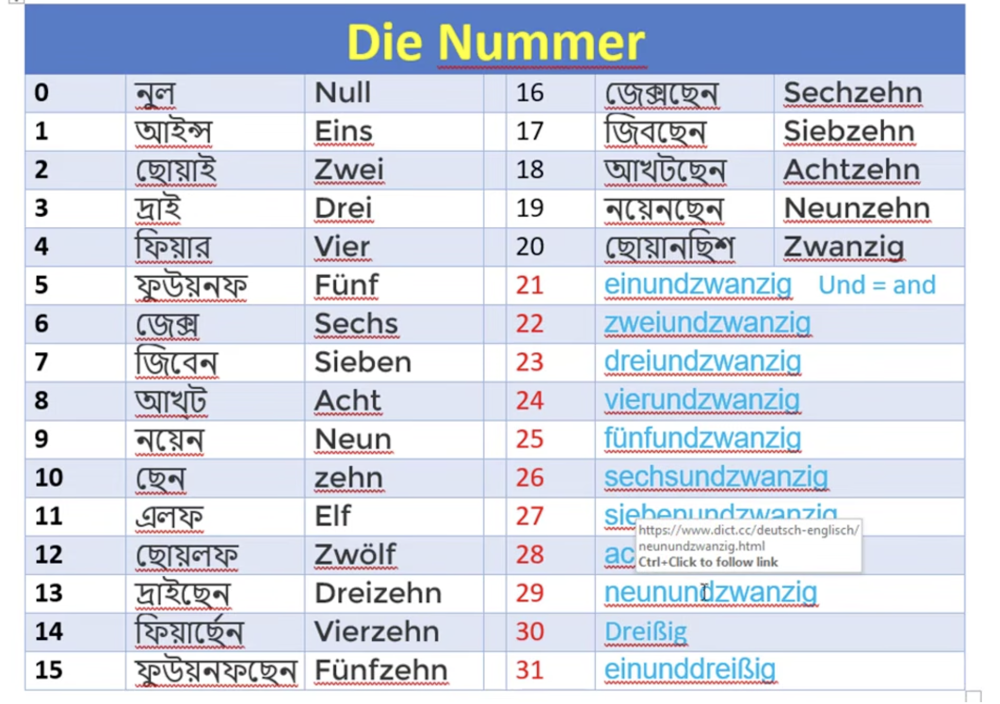
| # | German | # | German |
|---|---|---|---|
| 0 | Null | 16 | Sechzehn |
| 1 | Eins | 17 | Siebzehn |
| 2 | Zwei | 18 | Achtzehn |
| 3 | Drei | 19 | Neunzehn |
| 4 | Vier | 20 | Zwanzig |
| 5 | Fünf | 21 | Einundzwanzig |
| 6 | Sechs | 22 | Zweiundzwanzig |
| 7 | Sieben | 23 | Dreiundzwanzig |
| 8 | Acht | 24 | Vierundzwanzig |
| 9 | Neun | 25 | Fünfundzwanzig |
| 10 | Zehn | 26 | Sechsundzwanzig |
| 11 | Elf | 27 | Siebenundzwanzig |
| 12 | Zwölf | 28 | Achtundzwanzig |
| 13 | Dreizehn | 29 | Neunundzwanzig |
| 14 | Vierzehn | 30 | Dreißig |
| 15 | Fünfzehn | 31 | Einunddreißig |
Die Wochentage (Days of the Week)
die Woche = the week (plural die Wochen), der Tag = the day (plural die Tage), die Wochentage = the days of the week. Every day of the week is masculine, so it always takes der. Notes from November 22, 2026.
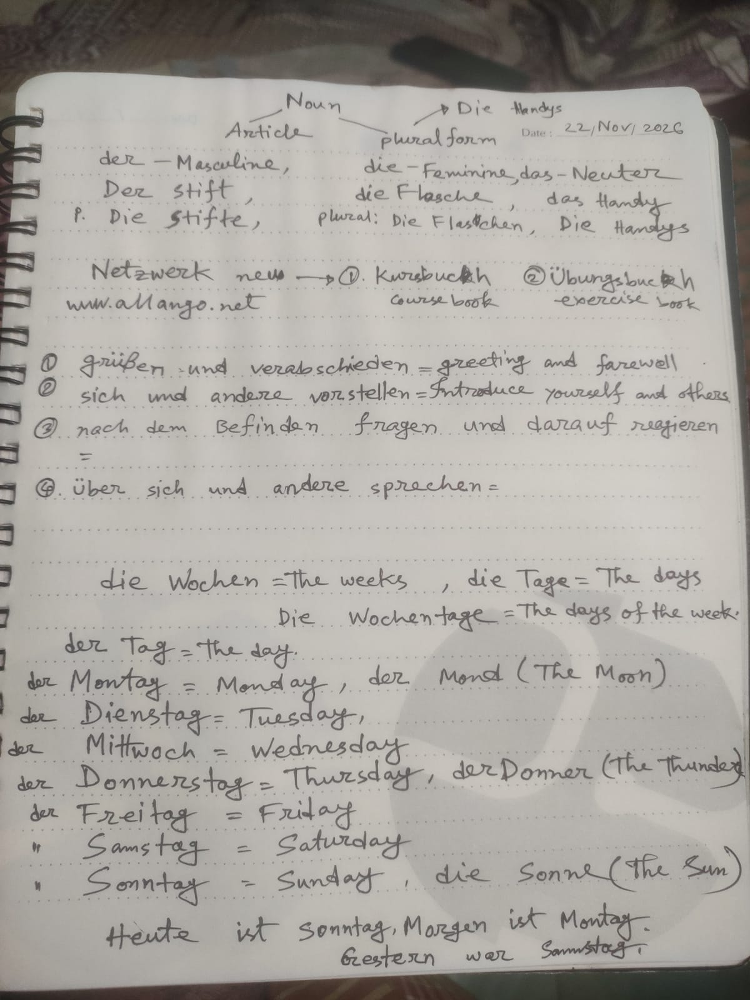
| Deutsch | English | Bangla | Memory hook |
|---|---|---|---|
| der Montag | Monday | সোমবার | der Mond = the moon |
| der Dienstag | Tuesday | মঙ্গলবার | |
| der Mittwoch | Wednesday | বুধবার | "mid-week" — the only day without -tag |
| der Donnerstag | Thursday | বৃহস্পতিবার | der Donner = the thunder |
| der Freitag | Friday | শুক্রবার | |
| der Samstag | Saturday | শনিবার | Also Sonnabend in northern Germany |
| der Sonntag | Sunday | রবিবার | die Sonne = the sun |
Tip: it works the same way in Bangla — সোম is the moon (Montag) and রবি is the sun (Sonntag).
Today, tomorrow, yesterday
| German | English |
|---|---|
| Heute ist Sonntag. | Today is Sunday. |
| Morgen ist Montag. | Tomorrow is Monday. |
| Gestern war Samstag. | Yesterday was Saturday. |
war is the past form of ist (was / is). To say "on Monday", use am: Am Montag lerne ich Deutsch. (On Monday I learn German.)
Personal Pronouns
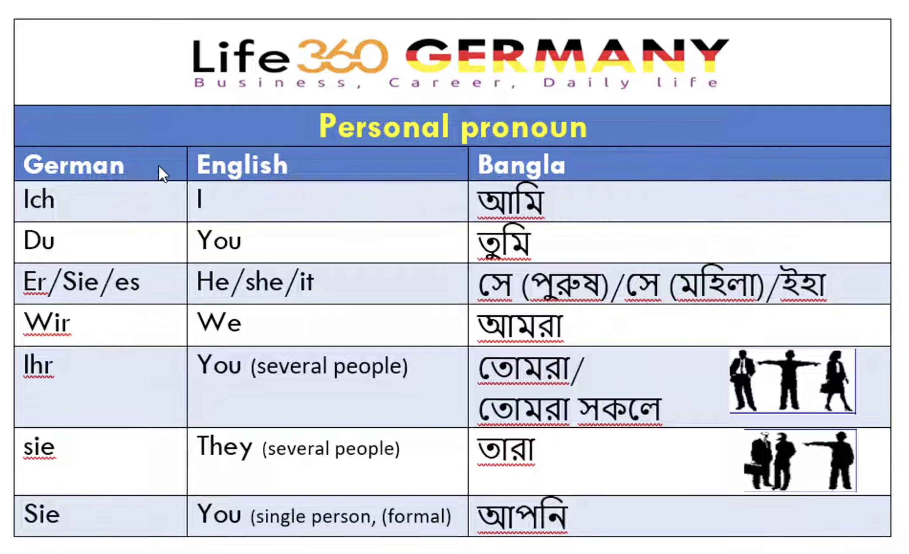
| German | English | Bangla |
|---|---|---|
| Ich | I | আমি |
| Du | You (informal, singular) | তুমি |
| Er / Sie / es | He / She / It | সে (পুরুষ) / সে (মহিলা) / ইহা |
| Wir | We | আমরা |
| Ihr | You (several people) | তোমরা / তোমরা সকলে |
| sie | They (several people) | তারা |
| Sie | You (single person, formal) | আপনি |
Articles & Plural (der / die / das)
Every German noun has an article that shows its gender, and nouns are always written with a capital letter. In the plural the article is always die, whatever the gender.
| Gender | Singular | Plural | English |
|---|---|---|---|
| Masculine | der Stift | die Stifte | pen → pens |
| Feminine | die Flasche | die Flaschen | bottle → bottles |
| Neuter | das Handy | die Handys | mobile phone → mobile phones |
| Masculine | der Tag | die Tage | day → days |
| Feminine | die Woche | die Wochen | week → weeks |
Tip: the plural article is always die, but the plural ending changes (-e, -n, -s, …) and there's no single rule. Learn every new noun as a set: article + word + plural, e.g. der Stift, die Stifte.
Verb Conjugation (Subject–Verb Agreement)
Just like subject–verb agreement in English (I go / he goes), a German verb changes its ending depending on the subject — but German changes it for every person, not just he/she/it.
How to conjugate a regular verb in the present tense:
- Take the infinitive, e.g. gehen (to go).
- Cancel (remove) the -en ending → the stem is geh.
- Add the ending that matches the subject: e, st, t, en, t, en.
Formula: Stem + e, st, t, en, t, en
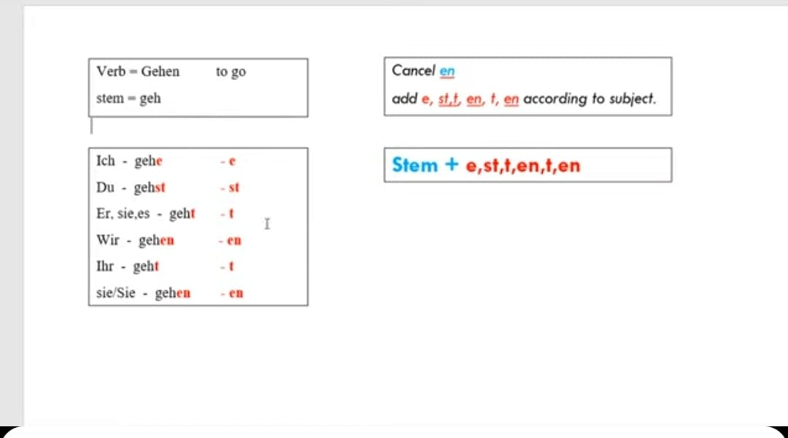
| Subject | Ending | gehen (to go) | English |
|---|---|---|---|
| Ich | -e | gehe | I go |
| Du | -st | gehst | You go (informal) |
| Er / sie / es | -t | geht | He / she / it goes |
| Wir | -en | gehen | We go |
| Ihr | -t | geht | You go (plural, informal) |
| sie / Sie | -en | gehen | They go / You go (formal) |
Same rule with other verbs
| Subject | lernen (to learn) | wohnen (to live) | trinken (to drink) |
|---|---|---|---|
| Ich | lerne | wohne | trinke |
| Du | lernst | wohnst | trinkst |
| Er / sie / es | lernt | wohnt | trinkt |
| Wir | lernen | wohnen | trinken |
| Ihr | lernt | wohnt | trinkt |
| sie / Sie | lernen | wohnen | trinken |
Tip: the wir and sie/Sie forms always look the same as the infinitive. When the stem ends in -t or -d (arbeiten, finden), add an extra e so the verb is easier to say: du arbeitest, er arbeitet, ihr findet.
W-Questions (W-Fragen)
German question words almost all start with W (like English "wh-" words). In a W-question the question word comes first and the conjugated verb comes second: Wo wohnst du? (Where do you live?)
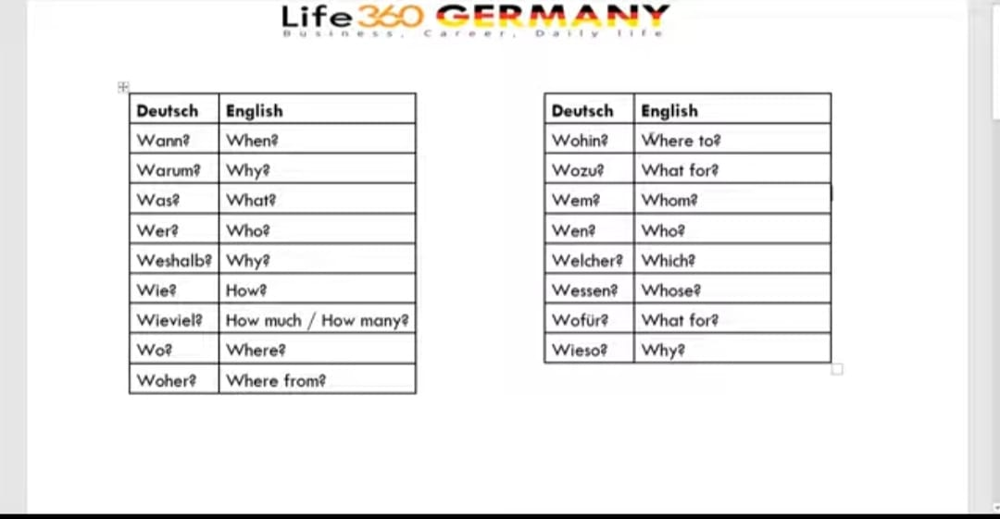
My handwritten list from November 8, 2026, with the Bangla pronunciation of each word:
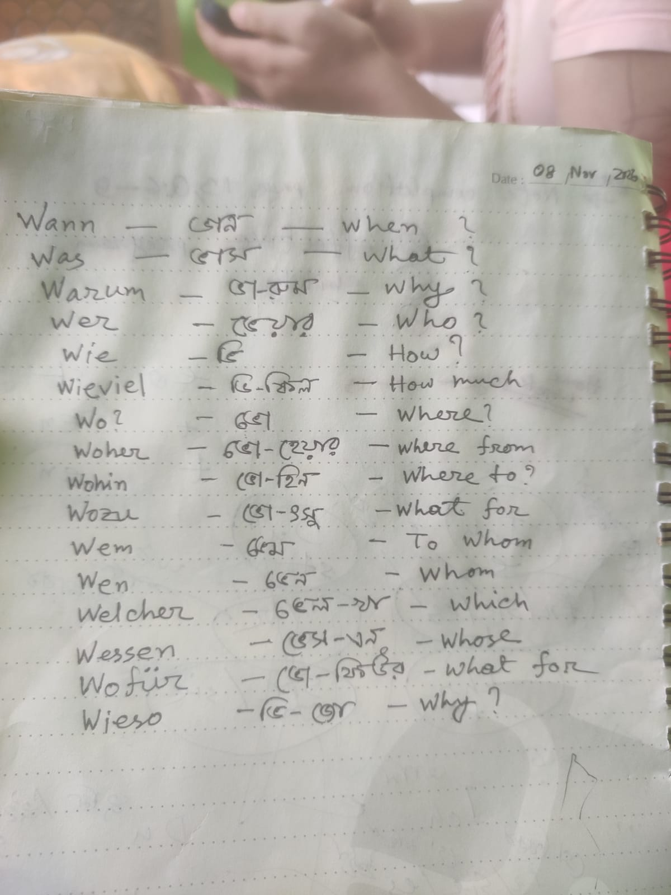
| Deutsch | Bangla (pronunciation) | English |
|---|---|---|
| Wann? | ভান | When? |
| Was? | ভাস | What? |
| Warum? | ভা-রুম | Why? |
| Wer? | ভেয়ার | Who? |
| Wie? | ভি | How? |
| Wieviel? / Wie viel? | ভি-ফিল | How much / How many? |
| Wo? | ভো | Where? |
| Woher? | ভো-হেয়ার | Where from? |
| Wohin? | ভো-হিন | Where to? |
| Wozu? | ভো-ৎসু | What for? |
| Wem? | ভেম | (To) whom? (dative) |
| Wen? | ভেন | Whom? (accusative) |
| Welcher? | ভেল-খার | Which? |
| Wessen? | ভেস-সেন | Whose? |
| Wofür? | ভো-ফিউর | What for? |
| Wieso? | ভি-সো | Why? |
| Weshalb? | Why? |
Tip: Warum, Weshalb and Wieso all mean "why". Wo / Woher / Wohin mean where / where from / where to: Woher kommst du? (Where do you come from?) — Wohin gehst du? (Where are you going?)
Modal Verbs
Modal verbs (can, must, should, may, like, want, would like) change with the subject, but they are irregular: they don't follow the normal stem + e, st, t, en, t, en rule. Note that the ich and er/sie/es forms are always the same and have no ending (ich kann, er kann).
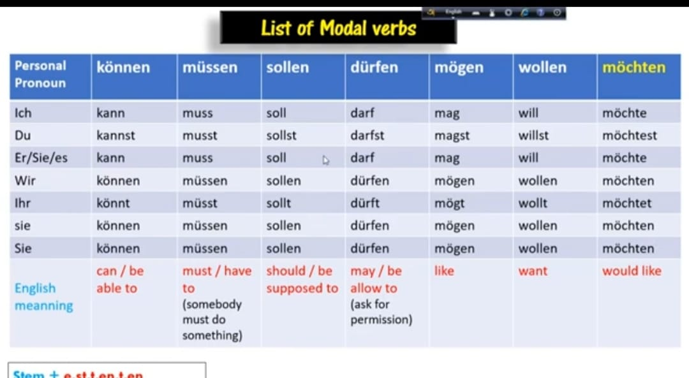
| Pronoun | können | müssen | sollen | dürfen | mögen | wollen | möchten |
|---|---|---|---|---|---|---|---|
| Ich | kann | muss | soll | darf | mag | will | möchte |
| Du | kannst | musst | sollst | darfst | magst | willst | möchtest |
| Er / Sie / es | kann | muss | soll | darf | mag | will | möchte |
| Wir | können | müssen | sollen | dürfen | mögen | wollen | möchten |
| Ihr | könnt | müsst | sollt | dürft | mögt | wollt | möchtet |
| sie | können | müssen | sollen | dürfen | mögen | wollen | möchten |
| Sie | können | müssen | sollen | dürfen | mögen | wollen | möchten |
| Meaning | can / be able to | must / have to | should / be supposed to | may / be allowed to (ask for permission) | like | want | would like |
Word order with modal verbs
- Put the modal verb right after the subject in statements (position 2).
- Put the main verb (infinitive) at the very end of the sentence.
- In yes/no questions, the modal verb comes first: Können wir … ?
Ich kann sehr gut Deutsch sprechen. — I can speak German very well.
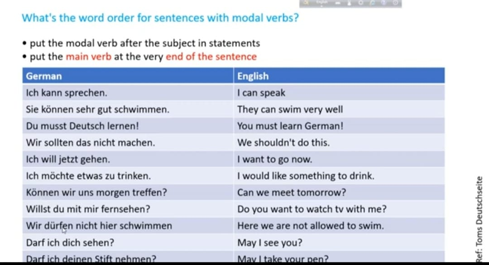
| German | English |
|---|---|
| Ich kann sprechen. | I can speak. |
| Sie können sehr gut schwimmen. | They can swim very well. |
| Du musst Deutsch lernen! | You must learn German! |
| Wir sollten das nicht machen. | We shouldn't do this. |
| Ich will jetzt gehen. | I want to go now. |
| Ich möchte etwas zu trinken. | I would like something to drink. |
| Können wir uns morgen treffen? | Can we meet tomorrow? |
| Willst du mit mir fernsehen? | Do you want to watch TV with me? |
| Wir dürfen nicht hier schwimmen. | Here we are not allowed to swim. |
| Darf ich dich sehen? | May I see you? |
| Darf ich deinen Stift nehmen? | May I take your pen? |
Note: sollten (in "Wir sollten das nicht machen") is the "should" form of sollen — softer advice than sollen.
Common German Verbs
A list of the most common everyday verbs (from a "50 Common German Verbs" sheet). Most of them are regular, so they follow the stem + e, st, t, en, t, en rule.
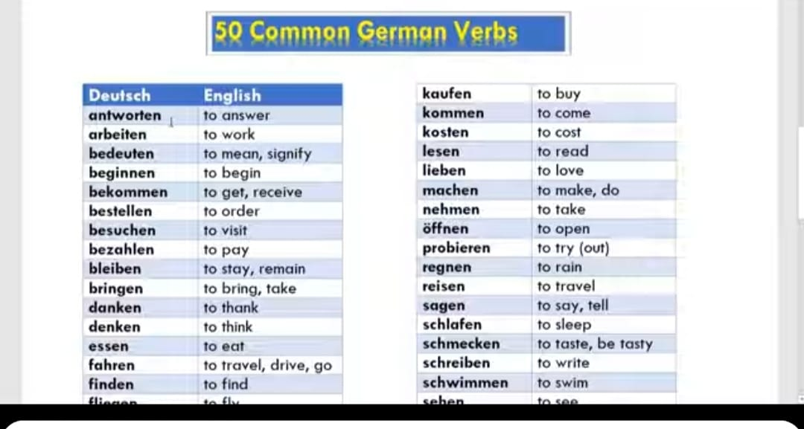
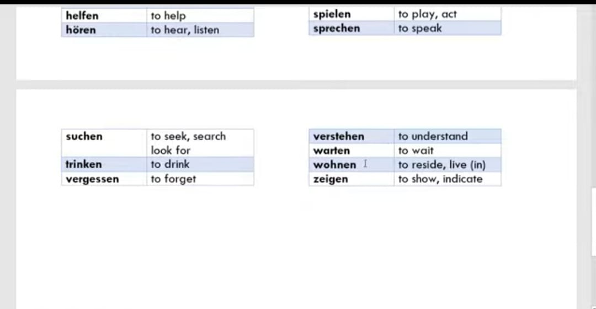
| Deutsch | English | Deutsch | English |
|---|---|---|---|
| antworten | to answer | kaufen | to buy |
| arbeiten | to work | kommen | to come |
| bedeuten | to mean, signify | kosten | to cost |
| beginnen | to begin | lesen | to read |
| bekommen | to get, receive | lieben | to love |
| bestellen | to order | machen | to make, do |
| besuchen | to visit | nehmen | to take |
| bezahlen | to pay | öffnen | to open |
| bleiben | to stay, remain | probieren | to try (out) |
| bringen | to bring, take | regnen | to rain |
| danken | to thank | reisen | to travel |
| denken | to think | sagen | to say, tell |
| essen | to eat | schlafen | to sleep |
| fahren | to travel, drive, go | schmecken | to taste, be tasty |
| finden | to find | schreiben | to write |
| fliegen | to fly | schwimmen | to swim |
| helfen | to help | sehen | to see |
| hören | to hear, listen | spielen | to play, act |
| suchen | to seek, search, look for | sprechen | to speak |
| trinken | to drink | verstehen | to understand |
| vergessen | to forget | warten | to wait |
| wohnen | to reside, live (in) | ||
| zeigen | to show, indicate |
Everyday Phrases
Short phrases for daily life: saying thanks and sorry, reacting, asking for things, and getting by when I don't understand. My handwritten notes from November 25, 2026.
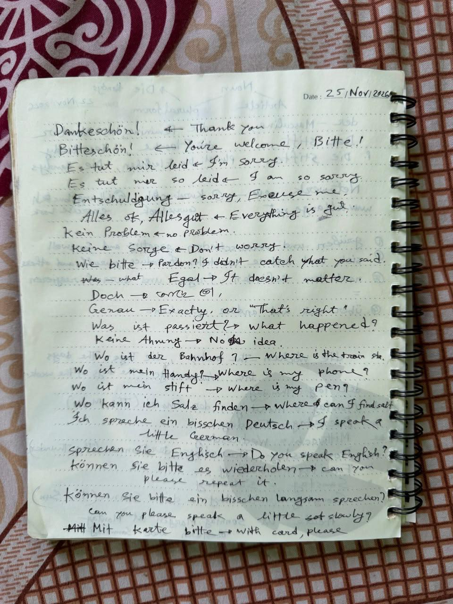
Thank you, please & sorry
| Deutsch | English |
|---|---|
| Dankeschön! | Thank you (very much)! |
| Bitteschön! / Bitte! | You're welcome! |
| Es tut mir leid. | I'm sorry. |
| Es tut mir so leid. | I'm so sorry. |
| Entschuldigung! | Sorry! / Excuse me! |
Tip: Bitte has several meanings: "please", "you're welcome", and (in Wie bitte?) "pardon?". Use Entschuldigung to get someone's attention or for small mistakes; Es tut mir leid is for real regret.
Reacting in a conversation
| Deutsch | English |
|---|---|
| Alles ok. / Alles gut. | Everything is OK. / All good. |
| Kein Problem. | No problem. |
| Keine Sorge. | Don't worry. |
| Egal. | It doesn't matter. |
| Genau! | Exactly! / That's right! |
| Doch! | Yes, it is! / Yes, I do! (correcting a "no") |
| Keine Ahnung. | No idea. |
| Was ist passiert? | What happened? |
Tip: Doch means "yes" when you disagree with a negative. Du sprichst kein Deutsch, oder? — Doch! (You don't speak German, right? — Yes, I do!) In Bangla it feels like আছে তো! / হ্যাঁ তো!
Where is …? (Wo ist …?)
| Deutsch | English |
|---|---|
| Wo ist der Bahnhof? | Where is the train station? |
| Wo ist mein Handy? | Where is my phone? |
| Wo ist mein Stift? | Where is my pen? |
| Wo kann ich Salz finden? | Where can I find salt? |
Careful: das Salz = salt, der Salat = salad. They sound close but are different words.
When I don't understand
| Deutsch | English |
|---|---|
| Wie bitte? | Pardon? (I didn't catch what you said.) |
| Was? | What? (casual) |
| Ich spreche ein bisschen Deutsch. | I speak a little German. |
| Sprechen Sie Englisch? | Do you speak English? |
| Können Sie es bitte wiederholen? | Can you please repeat it? |
| Können Sie bitte ein bisschen langsamer sprechen? | Can you please speak a little more slowly? |
Note: Wie bitte? is more polite than Was? Use langsamer ("slower"), not langsam ("slow"), when asking someone to slow down. These questions use Sie, the polite "you", for strangers.
Paying
| Deutsch | English |
|---|---|
| Mit Karte, bitte. | By card, please. |
| Bar, bitte. | Cash, please. |